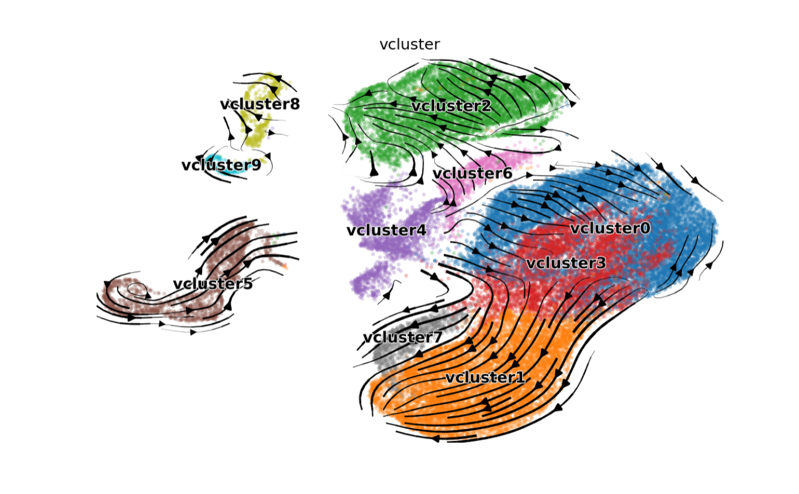
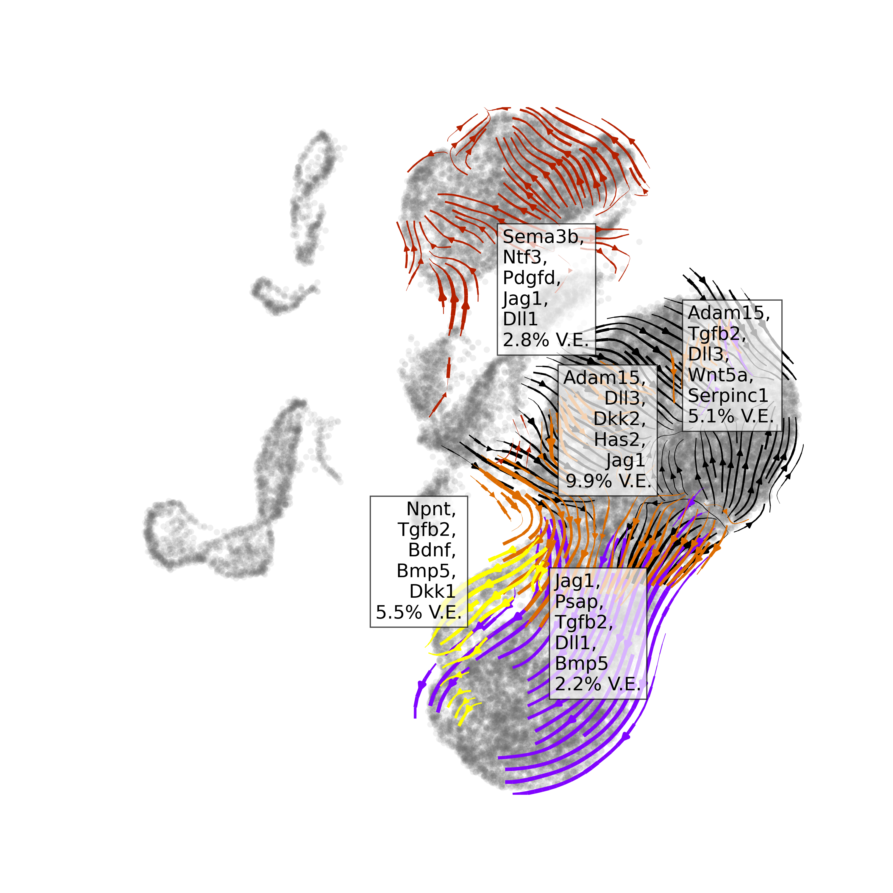
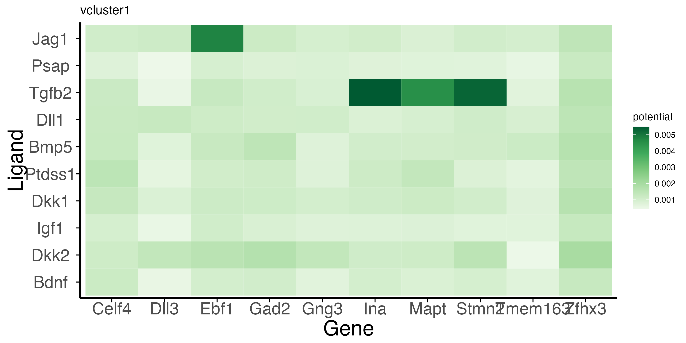

Entrain ligand-velocity analysis
entrain_velo.RmdEntrain ligand-velocity analysis from an Anndata object.
This document outlines a basic Entrain analysis starting from an
scverse anndata object with pre-calculated
velocities. By the end of this document, you will identify ligands that
are driving the velocities in your data.
Prior assumptions: Entrain-Velocity Analysis requires the following:
- Single-Cell RNA data on a dataset of cells differentiating as well as data on their microenvironmental niche. The niche can be contained in a separate dataset (e.g., if you have sequenced in a separate capture) or in the same dataset as the differentiating cells.
- A
.h5adobject produced by scvelo that contains robust velocity data. Please ensure that your biology you are interested in is conducive to producing trustworthy velocities.. - You have (some) idea of which cell clusters comprise the ‘niche’, or ligand-expressing cells, in your dataset.
library("Seurat"); library("SeuratWrappers");library("reticulate"); library("dplyr"), library("circlize")
library("entrain")Pre-processing and loading required data.
Conda setup.
Because RNA velocity is natively done in python, this workflow
involves calling python scripts from R to process the anndata object.
The interfacing between python and R is handled by the package
reticulate. We recommend using conda to setup a python
environment that contains the required packages for velocity
analysis.
# reticulate::conda_create("r-reticulate-sc")
# reticulate::conda_install("r-reticulate-sc", "scanpy", "leidenalg", "python-igraph", "adjustText", channel="conda-forge")
# reticulate::conda_install("r-reticulate-sc", "scvelo", channel="bioconda") #scvelo not on default conda.
reticulate::use_condaenv("r-reticulate-sc") # points to a conda installation that contains scanpy, scvelo, and anndata.Loading in required data
We will download a developing mouse brain atlas dataset at gestation day 10/11. This dataset contains both RNA expression and RNA velocities needed for our analysis. The following code block downloads the .gz file, decompresses it, and converts it into a Seurat object for analysis.
library("SeuratDisk")
options(timeout=3600)
h5ad_path <- "Manno_E10_E11.h5ad"
download.file("https://zenodo.org/record/7233173/files/Manno_E10_E11.h5ad.gz", "Manno_E10_E11.h5ad.gz")
system("gunzip Manno_E10_E11.h5ad.gz")
Convert("manno_entrain.h5ad", dest = "h5seurat", overwrite = FALSE, verbose = TRUE)
obj <- LoadH5Seurat("Manno_E10_E11.h5seurat", assays="RNA")Entrain relies on the NicheNet database of ligand-receptor-gene networks for the prior knowledge needed to make conclusions about environmentally-influenced trajectories. The genes here have been pre-converted from the original human genes to mouse orthologs.
Data at a glance
The data consists of cells in the developing mouse brain at day 10 after gestation. This comprises a population of neuroblasts rapidly differentiating to neurons (our cells we are going to analyse), as well as their complex microenvironment made up of cells from the endoderm, mesoderm, fibroblastic, blood, and immune compartments.
n_clusters <- obj@meta.data$Class %>% unique() %>% length()
cols = Seurat::DiscretePalette(n = n_clusters, palette = "alphabet2")
DimPlot(obj, group.by = "Class", cols=cols)
Run Entrain from a velocity anndata object.
Entrain fully integrates the scvelo package for velocity analysis. Below are the main steps:
Clustering Velocities
- First, cluster velocities into groups of similar velocity dynamics.
The resultant velocity clusters (or
vclusters) are a separate entity from the usual cell annotation clusters. Cells of the same celltype cluster may not necessarily be in the same velocity cluster.
adata <- entrain_cluster_velocities(h5ad_path, resolution=0.1)
We can see that the velocity clusters roughly, but not exactly, correspond to cell type clusters, indicating that velocities are moderately correlated with cell type.
Fitting Ligands to Velocities
The fitting is encapsulated in the single function
entrain_velocity(), shown below. This function firstly runs
scvelo.tl.recover_dynamics() to rank genes based on their
fit-likelihoods, a measure of a gene’s fit to the ordinary differential
equation models that underlie RNA velocity derivation. Higher values
denote more confidence in the velocity. Next, it runs Entrain analysis
on the velocity likelihoods on a cluster-by-cluster basis.
We will also save the resulting .h5ad object for plotting our results afterwards.
sender_cluster_names <- c("Blood", "Fibroblast", "Immune", "Mesoderm")
Idents(obj) <- "Class"
save_adata = "../../entrain_vignette_data/manno_entrain_result.h5ad"
obj_v <- entrain_velocity(receiver_obj = obj,
adata = adata,
save_adata = save_adata,
sender_cluster_key = "Class",
sender_clusters = sender_cluster_names,
lr_network = lr_network_mm,
ligand_target_matrix = ligand_target_matrix_mm)Visualizing results
At a glance
We can visualize the top ranked ligands at a glance with the function
plot_velocity_ligands(). By default, the function only
visualizes results with positive variance explained, with the assumption
that negative variance explained denotes poor model accuracy.
plot_velocity_ligands(adata=save_adata,
plot_output_path = "manno_entrain.png") This suggests a number of ligands responsible for neurogenic differentiation processes. These are well-established in literature as key drivers for cell differentiation.
In detail
Entrain-Velocity provides detailed plotting functions for visualizing extracellular and intracellular regulation predicted to be driving the observed velocities.
Sender Cell Visualization
Visualization of cells that express the ligands found in our
analysis. Cells are coloured based on mean expression of the
top_n_ligands predicted to be driving velocities in the
velocity cluster.
vclusters_to_plot <- c("vcluster0", "vcluster1", "vcluster2", "vcluster3")
save_adata = "../../entrain_vignette_data/manno_entrain.h5ad"
plot_sender_influence_velocity(adata= save_adata,
velocity_clusters = vclusters_to_plot,
title = "velocity_sender_influences.png") #### Visualizing ligand importances Visualization of ligands and their
relative importances, or contribution, towards each
#### Visualizing ligand importances Visualization of ligands and their
relative importances, or contribution, towards each
vcluster.
g<-velocity_ligand_importance_heatmap(obj_v,
n_top_ligands=5)
g
Visualizing high velocity likelihood genes
Commonly, a small proportion of the total genes contribute the
majority of the observed RNA velocity dynamics. You may wish to
visualize these genes by plotting the top likelihood genes. These genes
are the ones found by scvelo to most robustly fit the
underlying theoretical model. The function
plot_velocity_likelihoods_heatmap() plots, as a heatmap,
the n_top_genes ranked by velocity likelihood for each
velocity cluster.
g<-plot_velocity_likelihoods_heatmap(obj_v,
n_top_genes=5)
g
A good sanity check is to confirm that the top genes are what we would expect from the biological system. In this case, FEDSFSDFSD
Visualizing intracellular regulation downstream of the ligand-receptor pair.
The function plot_velocity_ligand_targets extracts
regulatory information from NicheNetR to visualize the
predicted regulatory linkages between the n_top_ligands and
the n_top_targets high velocity likelihood genes.
g<-plot_velocity_ligand_targets(obj_v, vcluster="vcluster1", n_top_ligands=10L, ligand_target_matrix=ligand_target_matrix_mm)
g
Circos plot
weighted_networks <- readRDS(url("https://zenodo.org/record/7233173/files/weighted_networks_mm.rds"))
draw_entrain_circos(obj = obj_v,
vcluster= "vcluster3",
lr_network = lr_network_mm,
weighted_networks = weighted_networks)